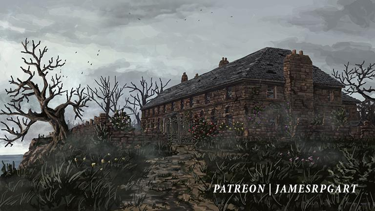

The Ghosts of Saltmarsh Saga

Resources:
Campaign 1: "The Sinister Secret of Saltmarsh"
Our Heroes:


Episode 1:
Our story begins with 4 heroes, Hector the Well-Endowed, a Ranger, half-elf, Thalema the Forgotten, a human druid, Tiny Nuggins, a dwarven cleric, and Nightman, a human warlock.
Upon different circumstances per individual, our heroes approach the "haunted Mansion" and begin exploring the surrounding area. Utilizing his keen sense of awareness, Hector guides the team towards the garden. Here he knows something is afoul. Immediately they confront 2 Giant Weasels (25xp ea). Hector slices the head off of the first, while Thalemas stabs the second to death with 3 hard blows. After slaying the wild beasts, they approach the well where they encounter 2 Poisonous Snakes(25xp ea). After Tiny cleanly slides his longsword through the first serpent’s thoat, Thalemas uses his animal handling to tame the second. Within the well the adventurers find 14 gold pieces.
After defeating and/or taming all foes our heroes decided to enter the haunted mansion. They entered the structure from a door nearest the well where they battled the snakes. Immediately upon entering our heroes were swarmed by spiders (100xp). Here, Thalemas uses his druidic magic to burn the spiders to a crisp. Below the ash they find 5 gold pieces. As our heroes carefully advance through the mansion they decided to enter the kitchen. Upon which, they were attacked by 4 Giant Centipedes (50xp). While the first latches onto Nightman, the second is sliced in half by Thalemas, the third is struck in the head by Hector’s arrow, and the fourth is beheaded by Tiny’s sword. Regardless of its mightless struggle, the first centipede is stabbed to death by Nightman.
After dispatching the slimy creatures our travelers climb to the second story of the building where they encountered 6 Stirges (25xp) in the attic. While the Stirges do hurt our heroes, with their rapid and furious attacks, Nightman uses his knives and bravery to slash a majority of them to death. Those remaining suffered a far less quick death after being subjected to Thalemas’ serpent’s vicious poison. As the remaining Stirges writhed in agony, the heroes rummaged and find 20 gold pieces. After exiting the attic, the travelers ventured into a spare room where they found a set of relatively new clothes, considering the distress of the remainder of all other items in the building.
Still confused by the good condition of the clothing, the party moved into their next room. Here they encountered 2 more spider swarms (50xp), which are quickly devoured by our hungry serpent. Here we find 5 gold pieces. Moving to the next room our heroes find a crumbling bedroom full of nothing except a weird lantern that appears to be used for a weird singnaling system…